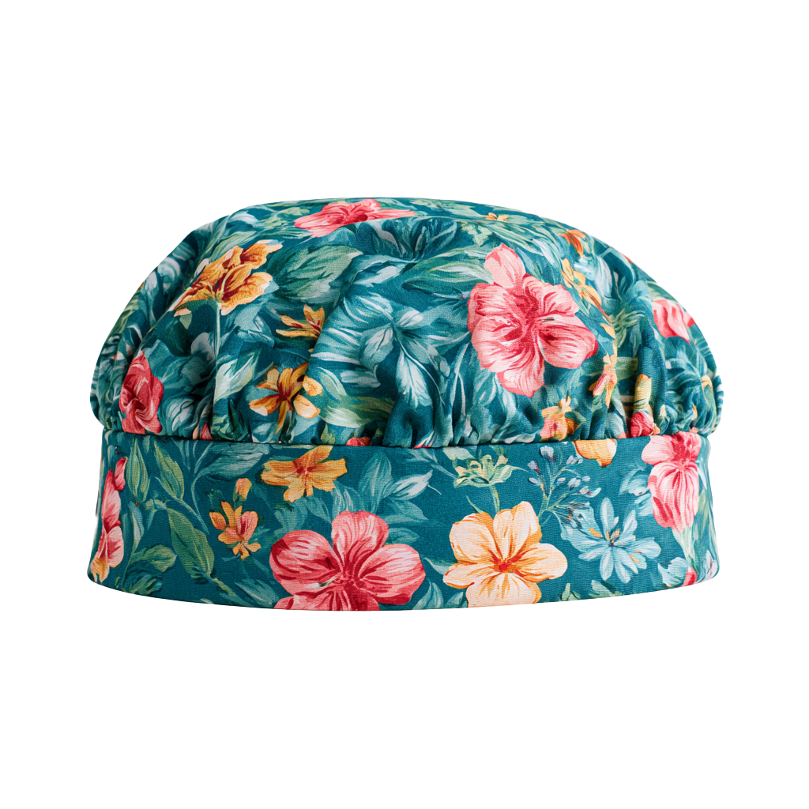

Другие товары — колпак для сна
Тропический сад
1 800 ₽
Описание:
Колпак для сна из гладкого атласа изумрудного цвета с принтом из розовых и жёлтых цветов и листьев — яркий тропический узор, который не просвечивает даже под ярким светом. Атласная ткань приятно скользит по коже, а резинка мягко удерживает колпак на голове, не сдавливая виски, поэтому спать в нём удобно на спине и на боку. Мягкая макушка не сдавливает волосы и не оставляет следов. Подходит и для дома, и для путешествий: колпак мало весит и легко помещается в дорожную косметичку.
Характеристики
- Назначение
- Колпак для сна и путешествий
- Материал
- Атлас (полиэстер)
- Цвет
- Изумрудный с принтом из розовых и жёлтых цветов
- Крепление
- Резинка
- Уход
- Ручная стирка при 30°
- Коллекция
- Весна-Лето 2023